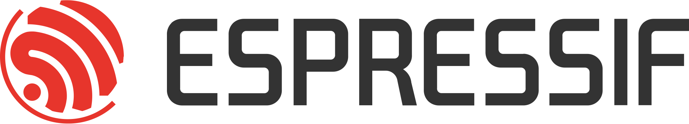

Ein weiteres Projekt war der Entwurf und Aufbau eine Homepage, samt einigem an Background über das Internet und WWW. Die Inhalte findet ihr unter den Links im Menü. Aktuelles Thema ist die Programmierung eines Mikrokontrollers, um mit diesem einen Motor zu steuern, Sensoren ab zu fragen ... und um damit irgendetwas tolles an zu stellen. :-)
Mikrokontroller Programmierung
Als Mikrokontroller (uC) nehmen wir den ESP32 von Espressif Systems, welcher auch schon in der RegenbogenReich-LED-Kette genutzt wurde. Der Mikrokontroller ist vergleichsweise fix für einen uC, aber lahm im Vergleich zu Handys, XBoxen oder richtigen Computern. Was ihn besonders geeignet macht ist, dass er WLAN und Bluetooth mit an Board hat und er damit einfach eingebunden werden kann. Als Entwicklungsumgebung nutzen wir die Arduino IDE.
Eigentlich für die andere Mikrokontroller (z.B. ATmega) entwickelt, läßt sich die IDE (Integrated Development Environment) auch super mit dem ESP32 nutzen.